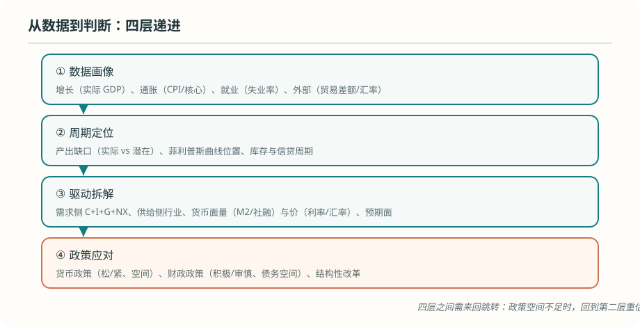
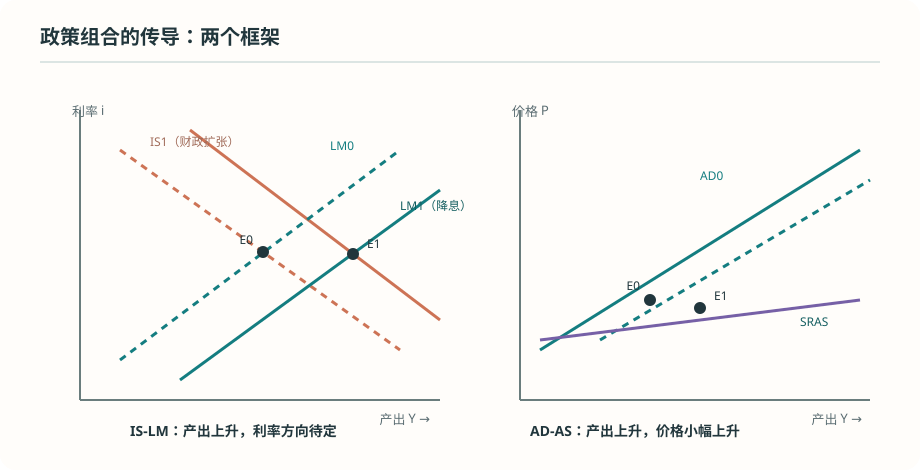

综合实战：像宏观经济学家一样思考
这一章不引入新理论，而是把前二十七章的工具放到一张“分析地图”上，再用两次演练收网：一次形势诊断、一次政策模拟。目标不是得到唯一答案，而是练成一套可复用的流程。
一张分析地图：四层递进
面对一组宏观数据，初学者容易眼花缭乱。先把整个分析流程浓缩为一个四层递进框架：从数据画像，到周期定位，到驱动拆解，再到政策应对。四层不是线性的——政策空间不足时，需要回到上一层重估“经济病得有多重”。

| 层次 | 核心问题 | 关键变量 | 对应章节 |
|---|---|---|---|
| 数据画像 | 经济目前是什么状态？ | GDP、CPI、失业率、贸易差额 | 第 2–7 章 |
| 周期定位 | 处在周期的什么位置？ | 产出缺口、NAIRU、库存 | 第 12、17、23 章 |
| 驱动拆解 | 哪些力量在推动或拖累？ | C/I/G/NX 分项、M2、PMI | 第 8–11、15–16、19 章 |
| 政策应对 | 用什么政策？力度多大？ | 利率空间、财政空间、汇率 | 第 15–18、24–25 章 |
| 长期视角 | 增长的可持续性如何？ | TFP、人口、制度质量 | 第 21–22 章 |
案例一：一次形势诊断
下面是一组构造的分析练习数据集（非任何官方发布的真实数据）。请尝试用四层框架写出你的判断。
| 指标 | 上期 | 本期 | 方向 |
|---|---|---|---|
| 实际 GDP 同比 | 5.1% | 4.8% | ↓ |
| 名义 GDP 同比 | 6.5% | 5.2% | ↓ |
| CPI 同比 / PPI 同比 | 0.3% / −1.2% | 0.1% / −1.5% | ↓ / ↓ |
| 失业率 / 青年失业率 | 5.1% / 14.2% | 5.3% / 15.8% | ↑ / ↑ |
| 社零 / 房地产投资增速 | 4.8% / −8.5% | 4.2% / −9.2% | ↓ / ↓ |
| M2 / 社融存量增速 | 9.0% / 9.5% | 8.2% / 8.8% | ↓ / ↓ |
第一层，数据画像：实际增速仍不低，但名义增速下降更快，平减指数回落，物价信号偏冷（CPI 低、PPI 为负）——经济从“微温”滑向“偏冷”。
第二层，周期定位：若潜在增长率在 5% 左右，实际 4.8% 意味着产出缺口可能转负；失业率尤其是青年失业率上升，与“低于潜在水平”一致。通胀持续走低、失业上升，符合“复苏中断/衰退初期”的特征。
第三层，驱动拆解：消费偏弱（社零低于 GDP 增速）；房地产投资仍大幅收缩，制造业放缓，基建小幅加速（财政发力）；净出口仍在但动能收窄。需求侧整体偏弱，旧动能是主要拖累。
第四层，政策应对：利率与准备金已下降，但社融增速反而回落——典型的“宽货币、紧信用”：银行愿贷而企业与居民不愿借。这提示单靠货币政策的效力有限，需要财政更积极，并用结构性改革破除传导障碍。
案例二：一次政策模拟
情景：假定政策组合为降息 + 新增财政赤字（数量为构造情景）。用 IS-LM 与 AD-AS 两个框架看它如何传导。

- 降息（LM 右移）：企业融资成本下降 → 投资上升；按揭利率下降 → 购房与实际可支配收入变化 → 消费；本币贬值压力 → 出口竞争力。限制：信心不足时传导有限；银行惜贷时 LPR 下降未必等于实际贷款利率下降。
- 财政扩张（IS 右移）：政府支出直接拉动当期 GDP；消费补贴提高实际可支配收入；再经乘数传导到就业与消费。若经济存在闲置资源，挤出效应较小。
- AD-AS：IS 与 LM 同时右移 → AD 右移 → 产出上升、价格小幅上升；短期 AS 基本不变。
演算：IS-LM 下“降息 + 财政扩张”的均衡移动
把财政扩张（IS 右移）与降息（LM 右移）分别用两个滑块表示，看产出与利率如何变化。所有数值为构造演算，不构成对真实政策的预测。
宏观经济学家的工具箱
课程将尽，真正的练习才刚刚开始。以下是值得长期关注的资源与习惯。
- 官方数据库：中国看国家统计局、人民银行；全球看 IMF、世界银行与国际清算银行（BIS）。每天花少量时间浏览主要指标，比理论课更磨真功夫。
- 高频数据：日度/周度指标（如房地产成交、港口吞吐）往往比月度官方统计提前数周传达信号，但要警惕噪声与口径不一致。
- 权威报告：IMF 的《世界经济展望》、BIS 的《年度经济报告》、人民银行的《货币政策执行报告》等，是各自领域的一手表述来源。
结语：框架，而不是预测术
二十八个章节走下来，最值得记住的不是某个模型的公式，而是三个“元认知”。
- 谦逊——接受不确定性。经济学不是物理学。2008 年金融危机与 2020 年疫情冲击都提醒我们：没有人能准确预测转折。好的分析师的价值在于提供系统性思考方式，而不是声称“肯定”。
- 多元模型思维——不执着于单一框架。短期波动用 IS-LM / AD-AS，长期增长用索洛与内生增长，金融危机用金融加速器与金融不稳定假说。保持工具箱的多样性，是避免“拿锤子看什么都像钉子”的最好方法。
- 保持好奇心。数字货币如何改变传导？AI 对 TFP 的影响是革命性还是渐进性？人口负增长的长期后果我们真的理解吗？这些问题没有标准答案，但你已拥有思考它们的工具。
做宏观分析，最终考验的不是能否给出一个漂亮数字，而是能否在信息不完备时，把机制、假设与不确定性都交代清楚，让判断可以被检验、被修正。
来源与阅读
本章的数据集与政策情景均为构造练习，非官方发布；实际分析请以以下官方来源为准。